GPB neues Moodle und neue Verwaltungstools
FAQ für Dozenten
Strg+F ist dein Freund!
Ansprechpartner
Kundenservice und Institutsleitung helfen Ihnen gerne!
Vorschläge und Wünsche bezüglich der neuen Werkzeuge sind sehr willkommen! Allerdings kann die Umsetzung etwas dauern, bitte Geduld.
Anwesenheit
Wenn ein Kurs gerade läuft, wo Sie als Dozent eingetragen sind, wird die Anwesenheitstabelle auf der Startseite der neuen Verwaltungstools angezeigt:
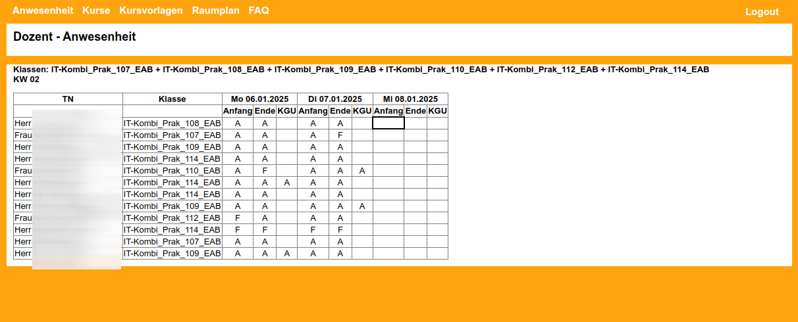
Jeder Eintrag in die Tabelle wird sofort gespeichert (keine Diskette mehr zum Speichern!).
Sobald ein Feld markiert ist, können Sie auch mit der Tastatur arbeiten (A, O, F, ...).
Kurse suchen
In den neuen Verwaltungstools können Sie Kurse suchen.
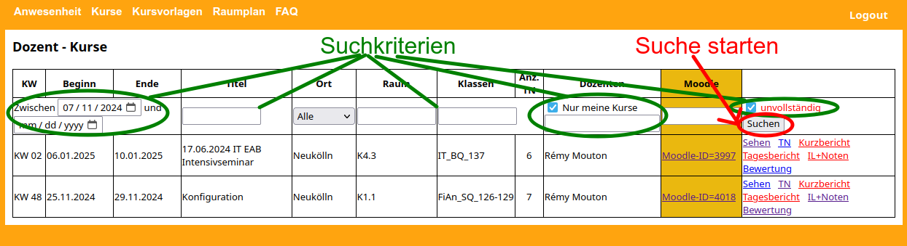
Die Checkbox "unvollständig" hilft Ihnen, die Kurse zu finden, wo noch etwas eingetragen werden muss (Berichterstattung, Noten: siehe unten).
IL und Klausuren
Wenn der Kundenservice einen Kurs anlegt, werden automatisch leere Aufgaben für die betroffenen Tage erstellt: IL-Aufgaben, Klausur und Nachklausur.
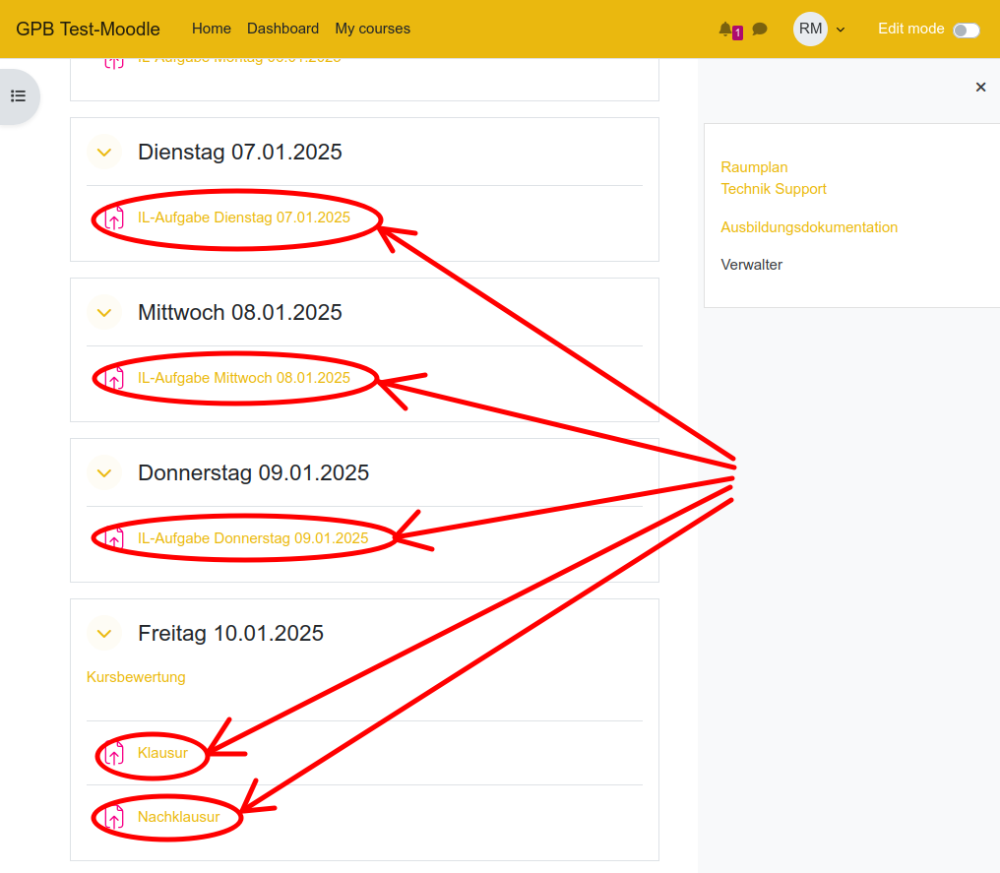
Sie können diese Moodle-Aufgaben bearbeiten und Konfigurieren, um einen Aufgabentext hinzuzufügen.
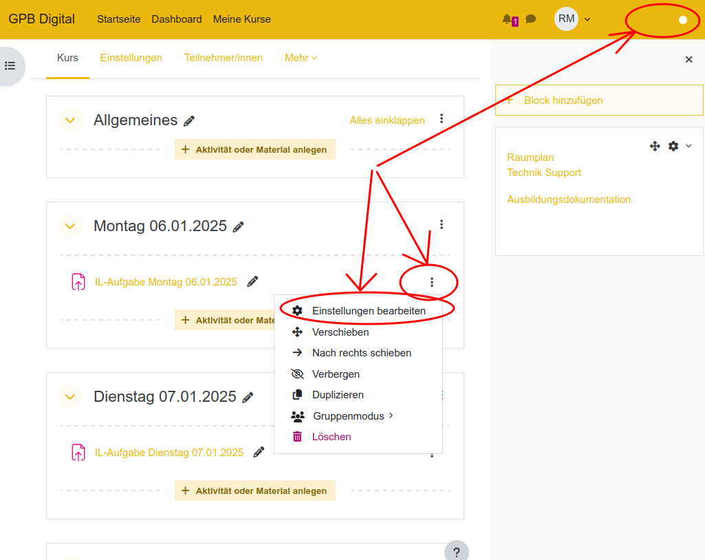
Sie können auch neue Aufgaben und andere Moodle-Tätigkeiten hinzufügen.
Alle Moodle-Tätigkeiten, deren Titel mit "IL" anfängt, werden als IL-Aufgaben ausgewertet.
(Im alten Moodle war das ein @ am Ende des Titels.)
Tätigkeiten, deren Titel mit "Klausur" oder "Nachklausur" anfängt, werden als solche ausgewertet.
In der Ausbildungsdokumentation finden Sie diese Tätigkeiten, indem Sie auf den "IL+Noten"-Link eines Kurses klicken.
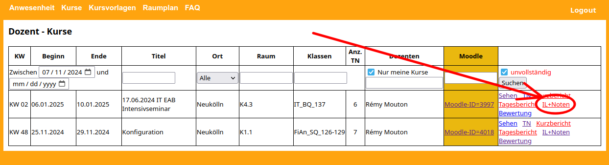
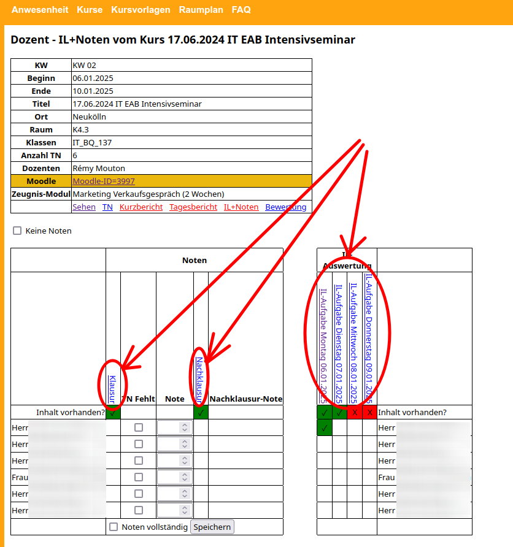
Noten
Noten bitte in der Ausbildungsdokumentation unter dem Link "IL+Noten" des Kurses vergeben.
Sie können je nach Kurs entweder "Keine Noten" ankreuzen oder Noten eintragen und speichern.
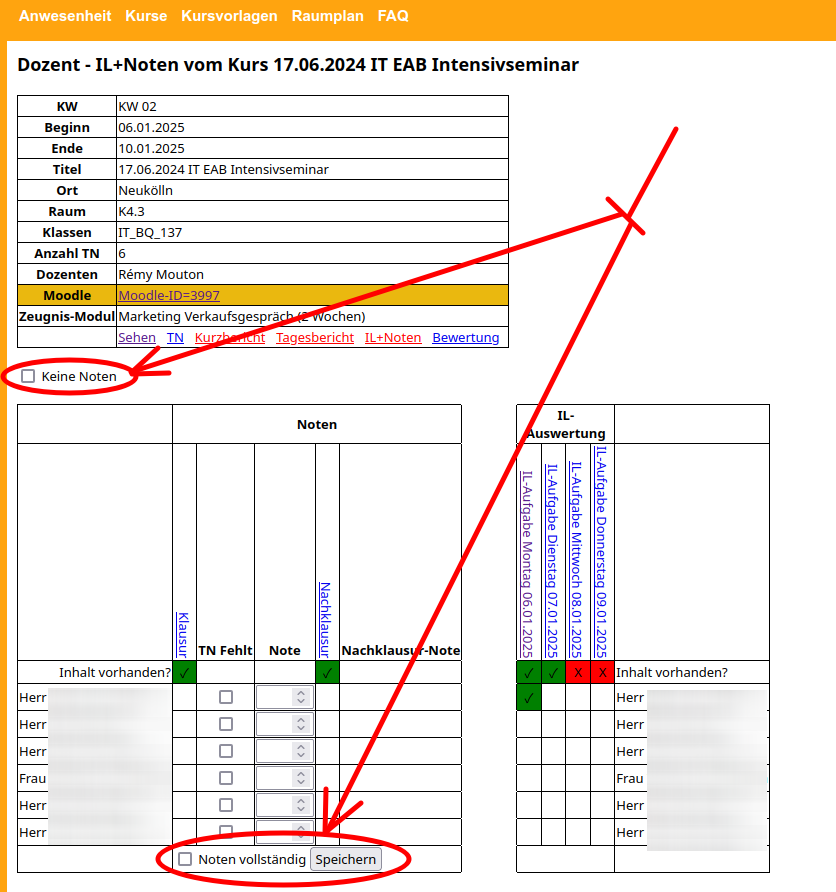
Berichterstattung
In der Ausbildungsdokumentation führen die Links "Kurzbericht" und "Tagesbericht" der Kurse zu den entsprechenden auszufüllenden Formulare.
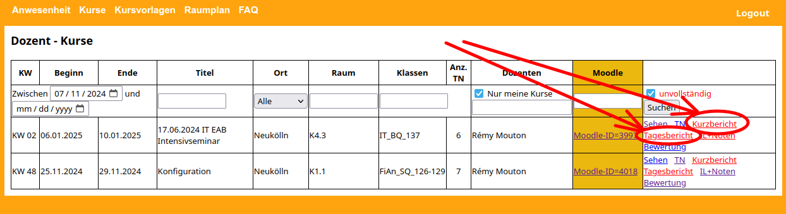
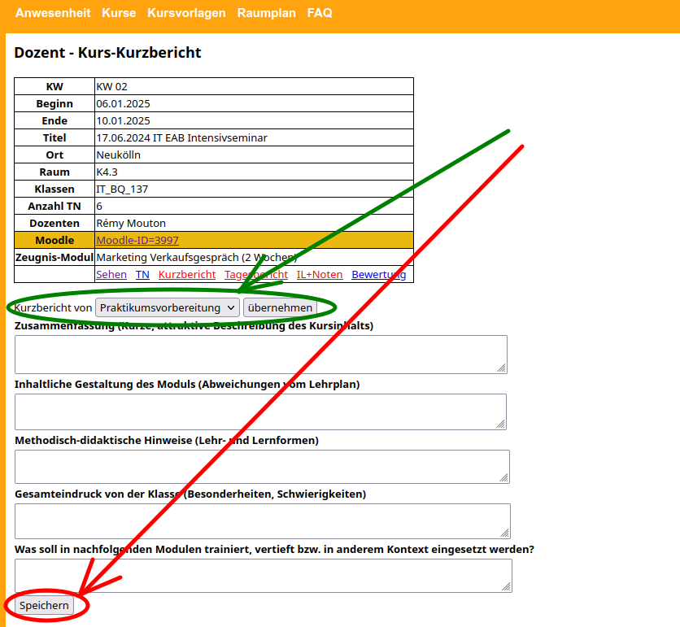
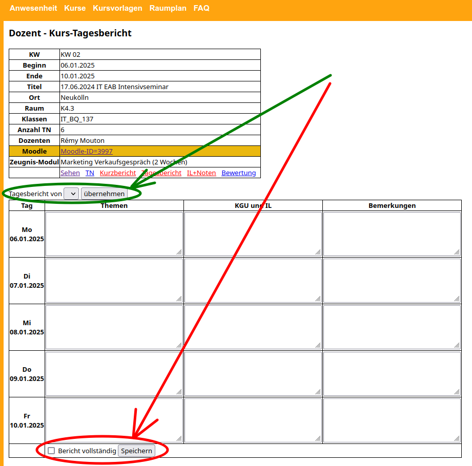
Wenn Sie diesen Kurs schon gegeben haben, können Sie die Berichte übernehmen und bearbeiten.
Vergessen Sie nicht zu speichern und bei vollständigem Bericht zu bestätigen!
Kursvorlagen
In den Verwaltungstools finden Sie unter "Kursvorlagen" eine Möglichkeit, Ihre Vorlagen zu verwalten.
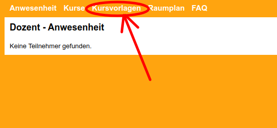
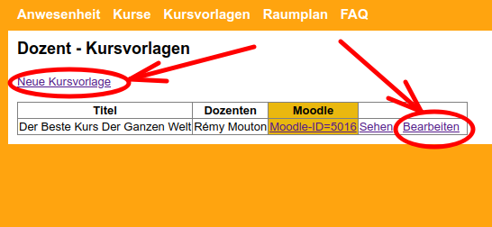
Beim Anlegen oder Bearbeiten einer Kursvorlage können Sie bestimmen, ob Kollegen diese Vorlage sehen/bearbeiten/benutzen dürfen. Die linke Spalte des
Bearbeitungsformulars enthält die eingetragenen Dozenten; die rechte Spalte ermöglicht es, weitere Kollegen zu suchen und einzutragen.
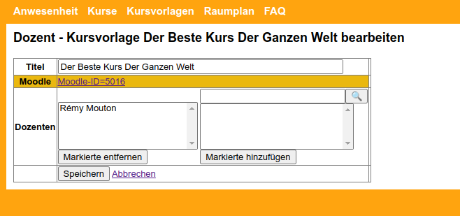
Beim Anlegen einer Kursvorlage wird ein leerer Moodle-Kurs erstellt. Diesen erreichen Sie mit den üblichen "Moodle-ID"-Links.
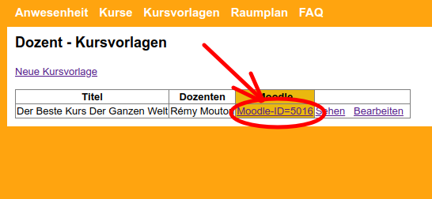
Mit Hilfe der Funktion "Kurse wiederverwenden" können Sie den Inhalt der Vorlage aus dem
alten Moodle oder aus einem anderen Kurs importieren. Die weitere Bearbeitung erfolgt wie bei jedem anderen Moodle-Kurs auch.
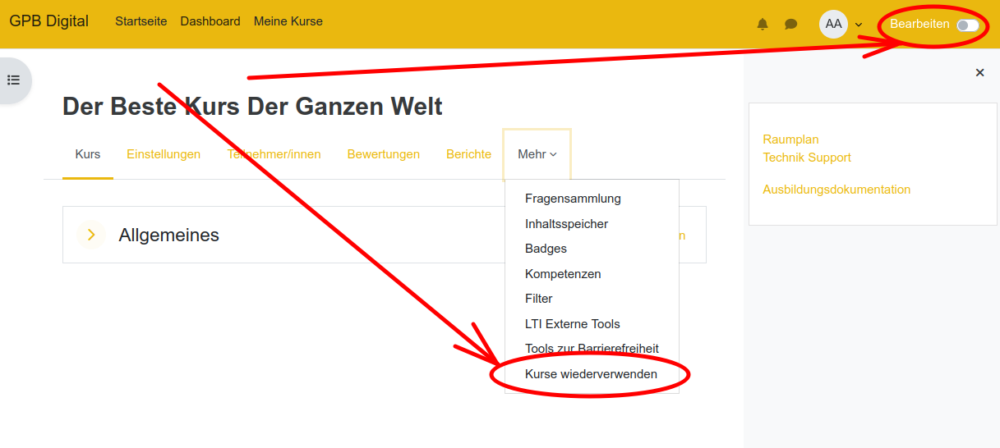
Sie finden die gleiche Funktion "Kurse wiederverwenden" auch in den IL-Kursen und können dort den Inhalt der Vorlage importieren.
Kursbewertung
Wenn der Kundenservice einen Kurs anlegt, wird automatisch am letzten Kurstag ein Link zur Kursbewertung erstellt.
Dieser Link führt zum Teilnehmerbereich der Ausbildungsdokumentation.
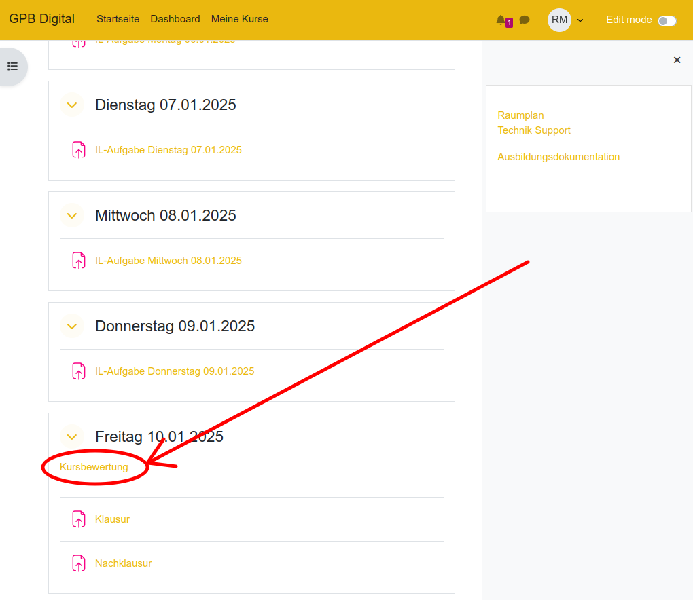
Als Dozent finden Sie die Bewertung Ihres Kurses durch die Teilnehmer unter dem Link "Bewertung".
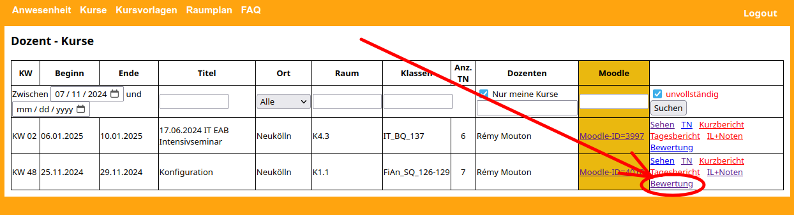
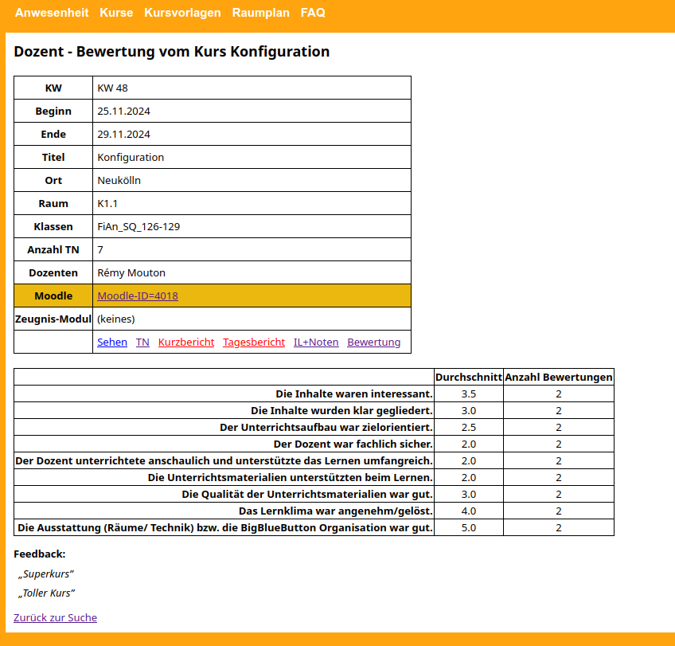
Wenn etwas fehlt
IL-Aufgabe zu schnell gelöscht
Einfach eine Moodle-Aufgabe anlegen (oder eine beliebige andere Moodle-Tätigkeit: Test, Link, Textseite, ...) und dieser einen Titel geben, der mit "IL" anfängt.
Diese Aufgabe wird dann in den Verwaltungstools in der IL-Auswertung gefunden (Seite "IL+Noten").
Klausur oder Nachklausur fehlt
Einfach eine Moodle-Aufgabe anlegen (oder eine beliebige andere Moodle-Tätigkeit: Test, Link, Textseite, ...) und dieser den Titel "Klausur" oder "Nachklausur" geben.
Diese Aufgabe wird dann in den Verwaltungstools auf der Seite "IL+Noten" gefunden.
Eine automatische Übertragung von Noten oder Punkten von Moodle zu den Verwaltungstools findet nicht statt,
die Noten müssen per Hand in den Verwaltungstools eingetragen werden (dabei bitte die IL-Aufgaben in die Note einbeziehen).
Link "Kurs bewerten" fehlt
Ab dem letzten Tag des Kurses finden die Teilnehmer den Kurs mit einem Link "Kurs bewerten" im Teilnehmerbereich der Verwaltungstools: auf
https://verwaltung.gpbmedien.de/tn verweisen.
Teilnehmer-Ansicht:
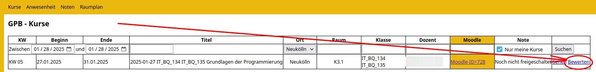
Dieser Link ist für alle Teilnehmer identisch (aber nicht für alle Kurse!) und kann in den Moodle-Kurs hinzugefügt werden.
Um den Link zur Kursbewertung schon vor dem letzten Tag des Kurses ins Moodle wieder hinzuzufügen, brauchen Sie die Moodle-ID des Kurses.
Bitte erstmal nur die ID (Zahl) notieren.
Dann lautet die Link-Adresse, die in den Moodle-Kurs eingetragen werden kann:
https://verwaltung.gpbmedien.de/tn/kurs_bewertung.php?kursmoodleid=hier die Moodle-ID
Unbedingt Copy-Pasten und nicht abtippen!